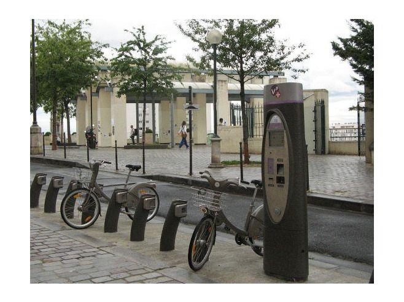

Expérience du 3ème type
Services rendus par les types de Postgresql
À propos
- Grégoire HUBERT
- Fondateur de PragmaFabrik
- Consultant Postgresql & PHP
- Auteur de Pomm


Exploiter les types de Postgres
Un problème d'interface
("<(3,2),1>","{""2014-05-24 13:59:57.142888+00"",""2014-05-24 12:59:57.142888+00""}")
Que représente cette ligne de données ?
Comment l'exploiter ?
L'approche de Pomm

Quelques types de Postgresql
- ➥ boolean, bitchar, bitvar
- ➥ strings, uuid, xml, json, inet
- ➥ numbers, timestamps with time zone, intervals
- ➥ integer et timestamps, ranges
- ➥ point, circle, segment, box, polygon
- ➥ HStore, LTree, ts_vector, bytea
- ➥ types composites, objets
- ➥ tableaux de tous les types ci dessus
- ➥ Ajoutez votre type ici
Convertisseurs de Pomm
- ➥ boolean,
bitchar,bitvar - ➥ strings, uuid, xml, json, inet
- ➥ numbers, timestamps with time zone, intervals
- ➥ integer et timestamps, ranges
- ➥ point, circle, segment,
box,polygon - ➥ HStore, LTree, ts_vector, bytea
- ➥ types composites, objets
- ➥ tableaux de tous les types ci dessus
- ➥ Ajoutez votre type ici
Rangeons un peu
Rangeons un peu
- ➥ Types contenus (texte, nombres, dates, durée, point)
- ➥ Types couvrants (cercle, range, boite)
- ➥ Types structurés (tableaux, JSON, XML, HStore, LTree, composite)
Types & opérateurs
- Chaque type de Postgresql vient avec
- ➥ ses opérateurs
- ➥ ses fonctions
Nous rangeons, ils cherchent
Chercher des résistances électroniques chez Farnell

Nous rangeons, ils cherchent
Résistances électroniques chez Farnell
- ➥ 100 000 références
- ➥ 15 000 références cat. « traversante »
- ➥ 8 axes de recherche
Une résistance en valeurs scalaires
- ➥ Une valeur ohmique (0,1 à 10e⁶Ω)
- ➥ Une précision (5%, à 0,1%)
- ➥ Une tolérance (1/8 à 150W)
- la valeur ohmique annoncée dépend de la précision
- La tolérance est toujours un minimum
Cherchez les dans un range !
- ➥ Permet de proposer les résultats les plus proches
- ➥ Permet de proposer une interface simple
- ➥ Ne gère que les entiers et les timestamps !
- ➥ Aucune valeur ajoutée sur un
BETWEEN!
Range

- ➥ union, intersection, recouvrement, contenu
- ➥ à droite, à gauche, adjacence
- ➥ peuvent être utilisés pour créer des contraintes d'exclusion
Catégoriser ses contenus
Catégoriser ses contenus
- ➥ Catégories arborescentes
- ➥ Flat tags
- ➥ Nested tags
LTree - chemins matérialisés
'restaurant.italien.pizza'
select * from restaurant where tag ~ '*.italien.*';
LTree + tableaux
{'public.restaurant.italien.pizza', 'public.cuisine.rapide', 'private.evenement.a_la_une'}
select * from restaurant where '*.italien.*' ~ ANY (tags);
LTree everywhere !
order by 'private.evenement.mise_a_la_une' ~ any(tags) desc
Internationalisation (I18N)
Internationalisation (I18N)
- ➥ Proposer des libellés en chaque langue
- ➥ Une jointure par label

Internationalisation (I18N)
HStore
- ➥ Clé => culture
- ➥ valeur => traduction
"en"=>"hello world", "fr"=>"salut Jules"
Internationalisation (I18N)
Modifier le mapping
class RestaurantMap extends BaseRestaurantMap
{
protected $culture = 'en';
public function getSelectFields($alias = null)
{
$fields = parent::getSelectFields($alias);
$fields['label'] = sprintf("label->%s", $this->culture);
return $fields;
}
public function setCulture($culture)
{
$this->culture = $culture;
}
}
Internationalisation (I18N)
Modifier le mapping
SELECT restaurant_id as id, ..., label->en as label, ... from "public"."restaurant" where ...
Données complexes
Données complexes
Un transformateur électrique : 1 à n enroulements
- ➥ Un voltage nominal
- ➥ Une intensité maximale
Type enroulement
create type transformer_winwing as (voltage int4, current int4);
Table transformateur
┌──────────────────┬───────────────────┬─
│ Colonne │ Type │
├──────────────────┼───────────────────┼─
│ transformer_id │ uuid │
│ ref │ character varying │
│ ei_dimension_id │ integer │
│ weight │ numeric(3,1) │
.........................................
│ pri │ winding │
│ secs │ winding[] │
│ inductance │ numeric(5,3) │
└──────────────────┴───────────────────┴─
Chercher...
- ➥ Chercher sur des sous éléments de notre type
select * from psu where (psu.pri).voltage = 2200;
Chercher...
- ➥ Chercher dans le tableau des sous éléments de notre type
select * from psu where 120 = ANY((psu.secs).voltage)
ERROR: column notation .voltage applied to type transformer_winding[], which is not a composite type
Les tableaux
Ont l'air sexy
Mais peuvent compliquer les choses
select * from book where ANY(authors) ~* 'victor hugo';
ERROR: syntax error at or near "any"
Sur notre problème de Winding
Comment chercher un secondaire ?
- ➥ Comment chercher un transfo qui sort du 12V ?
select * from psu where exists (select true from unnest(psu.secs) as val where (val).voltage = 120)
Comment chercher un secondaire ?
- ➥ Comment chercher un transfo qui sort du 12V ?
create or replace function public.get_voltage(transformer_winding[])
returns integer[]
language sql
immutable
as $function$
select array(select voltage from unnest($1));
$function$
select * from psu where 120 = ANY(get_voltage(psu.secs));
Encadrer le résultat ?
- ➥ Range à la rescousse
select * from psu where int4range(100, 140) @> ANY(get_voltage(psu.secs));
Si trop compliqué...
Restructurer en jointure
- ➥ Dénormaliser...
- ➥ ou pas
- ➥ renormaliser peut coûter cher
Solliciter Euclyde
Solliciter Euclyde
Où puis ranger mon vlib ?
Application portable
- ➥ Pour trouver une station avec des places libres
- ➥ Utiliser les types géométriques
Les types géométriques
- ➥ Opérateurs de contention
- ➥ Opérateurs de distance
select * from station where circle(point(1,2), 1) @> station.position
Les types géométriques
Comment récupérer les disponibilités ?
select s.id, s.name, last_measure
from station s
join lateral (select * from measure where measure.station_id = s.id order by create_at desc limit 1) last_measure on true
where
circle(point(1,2), 1) @> s.position
;
┌────┬───────────┬───────────────────────────────────────┐
│ id │ name │ last_measure │
├────┼───────────┼───────────────────────────────────────┤
│ 4 │ station 4 │ (45,4,3,"2014-02-20 16:42:04.059286") │
│ 1 │ station 1 │ (54,1,4,"2014-02-26 14:53:03.894491") │
It's all about types !
- ➥ Une table = un type
- ➥ Une vue = un type
- ➥ Un composite = un type